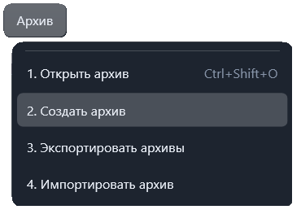

Функция «Создать архив»
Команда «Архив → Создать архив» создаёт пустой архив программ контроля
формата .apkw в хранилище приложения.
Заранее открывать вкладку архивов не требуется: команда открывает её при необходимости. Во вкладке действие также доступно в контекстном меню корневого узла «Архивы».


Порядок создания
- Выберите «Создать архив».
- Введите имя архива и нажмите «Создать».
- Дождитесь уведомления. Новый архив появится в дереве; добавление программ выполняется отдельно.
Расширение .apkw добавляется автоматически. Имя не должно быть пустым.
Архив с совпадающим именем не заменяется: выберите другое имя.
Доступность
Создавать архивы могут администратор и разработчик ПК. При недостаточных правах приложение сообщает об ограничении. Команда верхнего меню блокируется во время работы с аппаратурой.
Добавление программ описано в разделе «Операции с архивами».